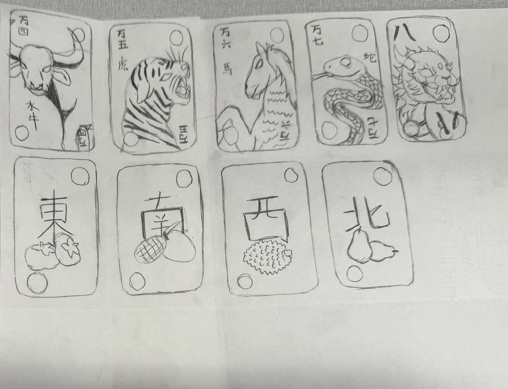
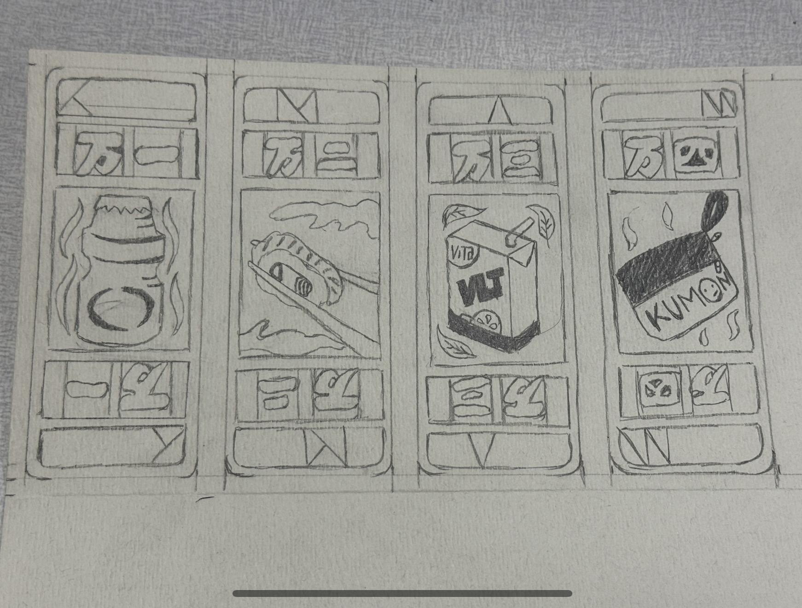

Card Redesign
01 - Sketches
The first round of sketches explored how to adapt the traditional suit tiles of Cho Dai Dee into a new visual system. Two directions were explored simultaneously: one set reimagining the animal and direction tiles with detailed character illustrations, and another rethinking the numbered Wan tiles with illustrated objects from Asian American daily life.

Animal and direction tiles with Chinese characters
The first pass explored a more literal adaptation, keeping the zodiac animals and cardinal direction tiles but redrawing them with more detailed illustration. Chinese characters were integrated directly into the card face to reinforce the cultural reference. While the direction was compelling, the tile system felt too close to the original game and left less room to introduce the personal imagery that drove the concept.
The pivot came from asking a simpler question: what images would a first-generation Asian American actually recognize on a card? The answer was everyday, not mythological.

Wan tiles redrawn around modern Asian American objects
The final sketch direction focused on the numbered Wan tile structure, with each card featuring an illustrated object from modern Asian American life: bubble tea, a Vita soy milk carton, a Kumon workbook, and others. The vintage Chinese card format, with its stacked layout and character labels, was retained as the structural reference, giving the new imagery a familiar visual frame.
02 - Prototyping
Before committing to the final material, a working prototype was built in Adobe Illustrator to test the card layout at scale and verify that the game logic held up under real play conditions. The goal was to catch any structural or readability issues before production.

Built in Illustrator, tested at the table
The full deck was laid out in Adobe Illustrator and printed as a paper prototype. The cards were then used for actual playtesting sessions of Cho Dai Dee with the new imagery in place. This round of testing confirmed that the suit hierarchy translated clearly to the new objects, and that the card values were readable during fast play. Minor spacing and sizing adjustments were made based on how the cards felt held in hand.
03 - Final Design
With the prototype validated, the deck was taken to production using the Trotec laser cutter in the Lehigh design lab. Each card was engraved onto birch wood sheets, translating the Illustrator artwork into a physical object with a texture and weight that matched the tactile nature of the game.

Laser engraved on birch wood with the Trotec cutter
The Illustrator files were sent directly to the Trotec laser cutter, which engraved each card face into birch wood sheets. The wood grain added a texture that complemented the vintage card aesthetic without requiring additional finishing. Cards were then individually cut and sanded to a consistent size.

Printed branding and chipboard box with rulebook
A custom chipboard box was constructed to house the finished deck alongside a printed rulebook. The branding and labeling were printed separately and applied to the box faces, creating a complete packaged product. The rulebook walks players through the rules of Cho Dai Dee adapted for the new deck, including the updated suit hierarchy and any rule modifications introduced during playtesting.
04 - Future Improvements
The current deck is a strong first version, but two areas stand out as the most impactful next steps for a refined edition.
Branding consistency between the cards and the packaging
The current box is printed on paper stock and feels noticeably different from the hand-feel of the engraved wood cards. A next version would bring the packaging closer to the cards materially and visually, using laser-engraved wood or chipboard with a burned finish so the box reads as part of the same object rather than a commercial wrapper around it. The goal is for someone picking up the box to feel like it was made by the same hands that made the deck.
Color on the cards for readability and play experience
The engraved wood finish looks intentional but makes it harder to distinguish suits quickly during play. Adding color, whether through paint fill, laser-scored color inlay, or a printed card version, would make the suit system immediately legible at a glance. Color also opens up the opportunity to lean further into the cultural references, using palette choices that echo the objects and their contexts rather than a uniform natural wood tone.